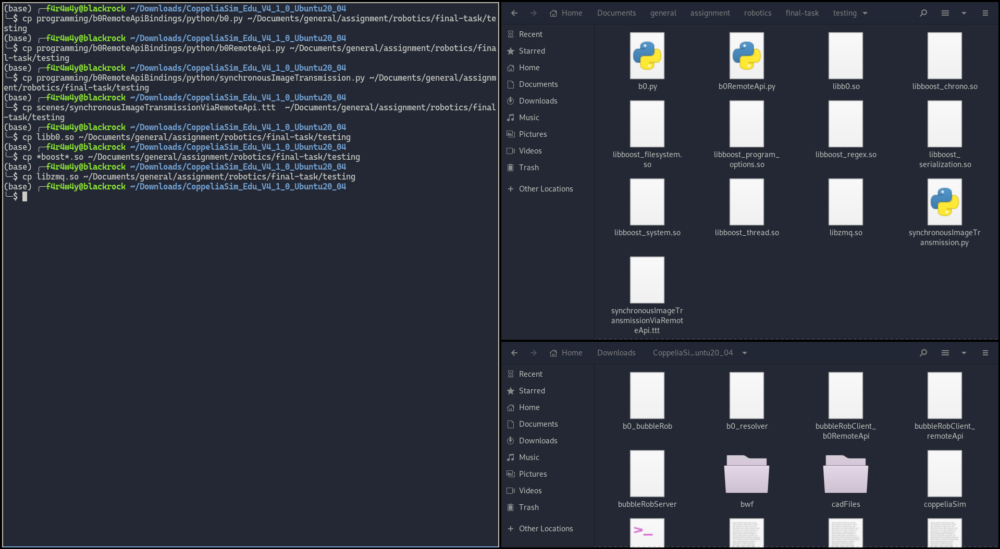
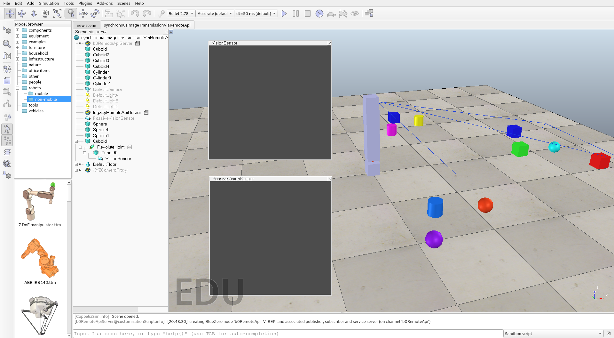
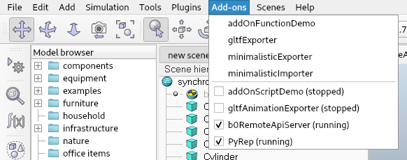

Simulasi CoppeliaSim menggunakan Python
Dikarenakan tubes (tugas besar) sebuah mata kuliah Robotika, saya "terpaksa" untuk mempelajari hal-hal yang berkaitan dengan simulasi robot menggunakan software CoppeliaSim (yang sebelumnya bernama V-REP), walaupun demikian saya tidak merasa dirugikan untuk mempalajari tentang hal ini, karena ternyata ada banyak hal yang menarik yang bisa saya gali lebih dalam mengenai simulasi ini.
Seperti yang dikatakan pada website nya (The robot simulator CoppeliaSim), CoppeliaSim merupakan sebuah software yang dirancang khusus untuk mensimulasikan sistem robot yang telah di modelkan sedemikian rupa.
Akan tetapi, ada beberapa hal yang sangat saya tidak suka mengenai software ini :
- Tampilannya kurang menarik
- Builtin code editor yang sangat tidak baik (atleast, bagi programmer yang sering pake vscode / vim / text editor lainnya)
- Sistem modelling yang tidak enak (menurut saya), karena saya terbiasa membuat 3d modelling pada software semacam blender, dan modelling editor pada software ini kurang baik (sayang, padahal simulasi nya ajib)
Karena beberapa hal yang sudah saya sebutkan diatas, saya mencari workaround nya agar workflow yang saya gunakan selama pengerjaan tubes nya lebih mudah dan lebih enak, walaupun ada hal yang tidak ada penggantinya seperti sistem modelling nya (saya sudah cari cara import 3d model dari blender ternyata tidak ada yang bisa XD).
API comes to the rescue
Bagi yang belum tahu, API (Application Programming Interface) merupakan suatu hal yang bisa menghubungkan antara satu aplikasi dengan aplikasi lainnya, satu service dengan service lainnya, dsb.
Dalam hal ini, API bisa digunakan sebagai sebuah perantara yang menghubungkan antara program Python yang kita buat dengan simulasi pada CoppeliaSim nya, jadi dalam artian lain kita sudah bisa mengeliminasi builtin code editor yang sangat merusak mata wkwk (look at that default light theme editor 🤮).
Beruntung bagi kita, dan props to the Coppelia DevTeam, API yang disediakan oleh CoppeliaSim ternyata bukan main bro, mereka bener bener antusias dengan pembuatan API nya (mungkin karena sadar code editor nya jelek wkwk JK), semua tentang API nya bisa dilihat di link berikut ini https://www.coppeliarobotics.com/helpFiles/en/b0RemoteApiOverview.htm.
Seperti yang bisa dilihat pada link tersebut, mereka membuat API yang bisa diakses oleh banyak bahasa yaitu C++, Python, Java, Matlab dan Lua (amazing isn't it).
Ternyata setelah saya lihat lihat lagi mereka secara spesifik menggunakan sebuah middleware bernama BlueZero atau yang mereka singkat dengan b0, yang bisa dilihat disini https://github.com/CoppeliaRobotics/bluezero, mereka bahkan meng-opensource kan semuanya 👏 (mantap, nambah resource baru di personal toolbox).
Tanpa basa basi lagi mengenai hal-hal diluar bahasan inti, mari kita fokus bagaimana cara menghubungkan Python dengan CoppeliaSim menggunakan API ini.
Python Binding (Now we're talking)
Sebenarnya, semuanya sudah terangkai jelas dalam tutorial yang ada di website nya ini https://www.coppeliarobotics.com/helpFiles/en/b0RemoteApiClientSide.htm, akan tetapi saya jabarkan agar lebih mudah dipahami, terkhusus di Python nya.
Berikut steps nya :
Install msgpack library pada python dengan menggunakan command berikut.
pip install msgpackCopy file-file berikut ini (dari folder tempat instalasi CoppeliaSim nya) kedalam direktori/folder yang diinginkan.
- (folder tempat instalasi CoppeliaSim)/programming/b0RemoteApiBindings/python/b0.py - (folder tempat instalasi CoppeliaSim)/programming/b0RemoteApiBindings/python/b0RemoteApi.py - (folder tempat instalasi CoppeliaSim)/programming/b0RemoteApiBindings/python/synchronousImageTransmission.py - (folder tempat instalasi CoppeliaSim)/scenes/synchronousImageTransmissionViaRemoteApi.tttUntuk OS Windows :
- (folder tempat instalasi CoppeliaSim)/b0.dll - (folder tempat instalasi CoppeliaSim)/boost_(blablabla).dll [ini ada banyak, copy aja semua yang awalnya boost akhirnya .dll] - (folder tempat instalasi CoppeliaSim)/libzmq(blablabla).dll - (folder tempat instalasi CoppeliaSim)/lz4.dll - (folder tempat instalasi CoppeliaSim)/zlib1.dllUntuk OS Linux :
- (folder tempat instalasi CoppeliaSim)/libb0.so - (folder tempat instalasi CoppeliaSim)/libzmq.so - (folder tempat instalasi CoppeliaSim)/*boost*.soContoh pada linux :
Thats it, simple kan wkwk
Simulation !!!

Untuk mencobanya buka saja software CoppeliaSim nya lalu buka scene yang tadi sudah di copy yang namanya synchronousImageTransmissionViaRemoteApi.ttt.

Lalu aktifkan b0RemoteApiServer pada CoppeliaSim nya didalam menu Add-ons > b0RemoteApiServer seperti berikut.

Setelah semua itu selesai, tinggal jalankan contoh program Python yang tadi sudah di copy juga di step sebelumnya yang bernama synchronousImageTransmission.py dengan cara :
python synchronousImageTransmission.py
Bila semua berjalan dengan baik, seharusnya sekarang anda bisa melihat pada simulasi nya ada 2 box yang keduanya memperlihatkan gambar dari vision sensor yang ada pada simulasinya.
Bila terjadi error, coba buka file synchronousImageTransmission.py nya, dan ganti b0RemoteApi_pythonClient -> b0RemoteApi_CoppeliaSim_Python dan juga b0RemoteApi -> b0RemoteApiAddOn, lalu coba jalankan kembali program Python nya ini (jangan lupa save dulu XD).
Gambar pada box yang diatas merupakan hasil langsung yang didapat dari vision sensornya, sementara box kedua yang berada dibawahnya mendapatkan gambar dari Python dengan proses berikut.
1. Vision sensor --(mengirim gambar ke)--> Box atas
2. Box atas --(mengirim gambar ke)--> program Python
3. Program Python (menerima gambar)
4. Program Python --(mengirim gambar ke)--> Box bawah
5. Box bawah (menampilkan gambar yang diterima)
Lumayan belibet kan prosesnya, walaupun demikian semuanya berjalan dengan cepat (bisa dilihat dari gambar yang tidak nge-lag pada Box bawah), ini semua berkat BlueZero yang mempercepat proses komunikasi melalui API nya dengan cepat menggunakan sistem multithreading.
Now what ?
Karena kita sudah bisa menjalankan seluruh program Python beserta simulasi yang diberikan dari contohnya tadi, kita bisa membuat keseluruhan workflow dengan lebih mudah sekarang.
Untuk program Python nya sebenarnya bisa saya singkat seperti berikut :
# Import semua hal yang diperlukan
import b0RemoteApi
import time
# Connect ke RemoteApiServer nya
# ( ingat, untuk b0RemoteApi_pythonClient dan b0RemoteApi menyesuaikan,
# bila terjadi error gunakan cara diatas tadi )
with b0RemoteApi.RemoteApiClient('b0RemoteApi_pythonClient','b0RemoteApi') as client:
# --------------------------------------------- #
# Disinilah tempat seluruh kodingan anda berada #
# --------------------------------------------- #
# Stop simulasi bila memang semua sudah selesai
client.simxStopSimulation(client.simxDefaultPublisher())
Itu versi simple nya yang hanya memperlihatkan cara untuk terhubung dengan simulasi nya, untuk penggunaan API dengan tujuan yang beragam bisa dicari tutorial nya ditempat lain hehe (mungkin saya nanti buat, "mungkin").
Selain tutorial lain, saran saya anda bisa saja lebih mudah dengan melihat dokumentasi nya langsung disini https://www.coppeliarobotics.com/helpFiles/en/b0RemoteApi-python.htm.
Last word
Semoga artikel nya mudah dipahami dan menyenangkan, jika memang dirasa bermanfaat silahkan sebarkan kepada yang lainnya agar ilmu nya tidak berhenti disini saja.
Terimakasih kepada Allah SWT dan juga para pembaca disini, semua yang buruk datangnya dari saya dan yang baik hanya datang dari-Nya, mohon maaf bila ada kesalahan 🙏.